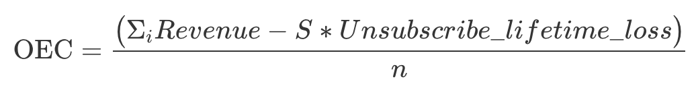
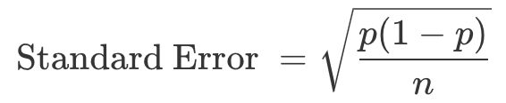
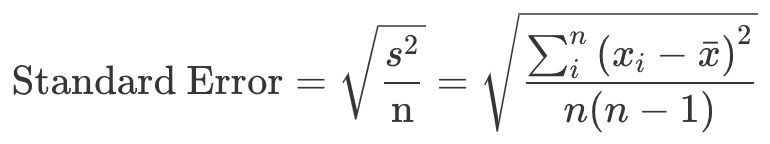
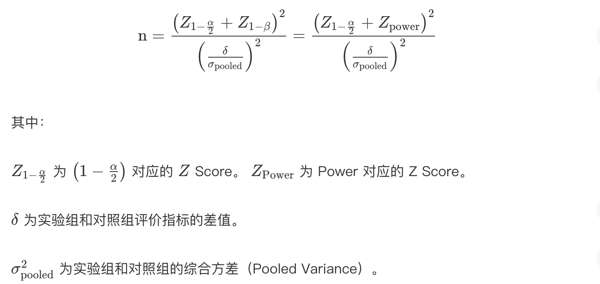
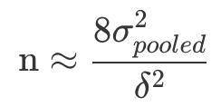
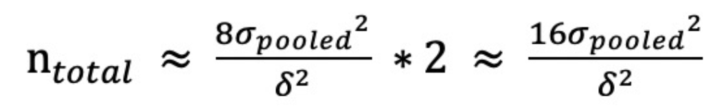
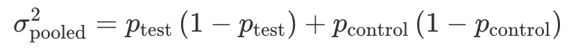
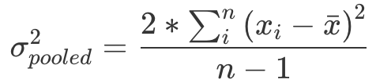
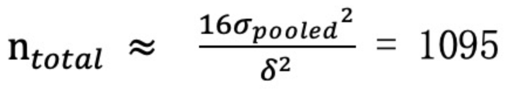
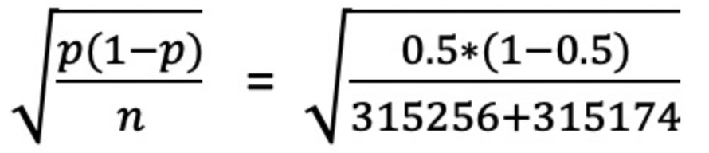

一个科学规范的 A/B 测试流程需要遵循以下步骤：
1.确定目标和假设 —> 2.确定指标（评价指标和护栏指标）—> 3.确定实验单位 —> 4.确定样本量（需要哪些统计量来确定样本量） —> 5.随机分组（一般为均分）—> 6.实施测试 —> 7.合理性检验（采用哪种检验）—> 8.分析测试结果（P 值法和置信区间法的判断标准）
下面将会围绕流程中重点的几个步骤进行展开。
确定目标和假设
做 A/B 测试是为了解决业务上遇到的问题，要解决的业务问题就是 A/B 测试目标。这里需要注意的是，目标要具体，可以被量化。
例如：一款按月付费的音乐 App，目标是希望提高营收。经过调研，发现产品的留存率低于行业水平，希望增加产品的便利功能，具体为“自动播放下一个专辑 / 歌单”功能来提升留存。
这里”留存”就不是一个很好的指标，因为不够具体无法量化。在按月付费的音乐 App 这个案例中，用户只要每个月按时付费续订，就是留存。所以，我们可以把用户留存定义为下个月的续订率，这样我们就把假设变得更加具体，并且目标可被量化。
因此在这个案例中， A/B 测试的假设为：在每个专辑 / 歌单播放完成后增加“自动播放下一个专辑 / 歌单”的功能，可以提升用户下个月的续订率。
A/B 测试的指标有哪几类？
A/B 测试的指标分为评价指标（Evaluation Metrics）和护栏指标（Guardrail Metrics）。
评价指标
评价指标指能驱动公司 / 组织实现核心价值的指标，通常是短期的、比较敏感、有很强的可操作性，例如点击率、转化率、人均使用时长等，是能够直接评价 A/B 测试结果的指标。
评价指标需要具有三个特征：可归因性、可测量性、敏感性和稳定性。当指标对变化太敏感或不敏感时，都不是一个好的评价指标。
- 用 A/B 测试来检测单次的变化时（比如单次推送 / 邮件）一般选用短期效果的指标，因为长期效果目标通常对单次变化并不敏感。
- 用 A/B 测试来检测连续的、永久的变化时（比如增加产品功能），可以选用长期效果的指标。
例如：“用户满意度”就不是一个可测量的指标，可将其转化为“用户续订率”指标；用于衡量推送周杰伦的新专辑的推送效果，”续订率”就不是具有敏感度的指标，因为推送只会产生短期效果，因此短期的收听率是对单次推送更加敏感且合适的指标。
如何测量评价指标的敏感性和稳定性呢？
A/A 测试。A/A 测试（A/A Test）是选择体验相同的测试对象分成实验组和对照组，若两组的指标有显著不同，那么就说明要么两组用户质量差异较大，要么指标波动范围太大，稳定性差。
护栏指标
只考虑评价指标是不够的，因为我们不确定测试是否会对业务有负面效果（长期/短期）。因此，我们还需要护栏指标。
例如：如果为了优化一个网页的点击率，就给网页添加了非常酷炫的动画效果。结果点击率是提升了，网页加载时间却增加了，造成了不好的用户体验。长期来看，这就不利于业务的发展。
护栏指标属于 A/B 测试中基本的合理性检验（Sanity Check），用于辅助保障 A/B 测试的质量，衡量 A/B 测试是否符合业务上的长期目标，不会因为优化短期指标而打乱长期目标，以及确保从统计上尽量减少出现各种偏差（Bias），得到尽可能值得信任的实验结果。
例如：如果为了优化一个网页的点击率，就给网页添加了非常酷炫的动画效果。那么“点击率”可以设为评价指标，“网页加载时间”设为护栏指标。
如何选取具体的评价指标？
第一，根据当前所处阶段的目标
产品初期，公司通常以拉新为主要业务目标，在这一阶段我们可选择以点击率、转化率作为评价指标；在产品的发展和成熟期，则会关注留存情况，可以以平均使用时间和频率、产品特定功能的使用率、留存率作为评价指标。
第二，采用定性 + 定量相结合的方法
对于一些比较抽象的目标，比如用户的满意度，我们可以使用一些定性的方法，例如问卷调查、用户调研等进行定量的数据分析来了解他们的使用行为。把定性的用户调研结果和定量的用户使用行为分析结合起来，找出哪些使用行为和用户的满意度有着强烈的关系。
例如：为了了解哪些指标与音乐 APP 满意度相关，我们先通过定性用户调研来确定哪些用户满意、哪些用户不满意完成分组。针对两组用户做定量分析，发现”收藏音乐”行为与用户满意度有明显正相关性。然后我们可以考虑把”收藏音乐的数量”或“收藏 X 首以上音乐的用户”作为评价指标。
第三，借鉴其他公司的评价指标
如何建立综合指标？
在实际的业务需求中，有时会出现多个目标，同一目标也可能有多个都很重要的评价指标，需要我们把它们都综合起来考虑，构建一个总体评价标准 （Overall Evaluation Criteria，简称 OEC）。
需要注意的是，OEC 有可能会包含护栏指标，例如下例中的“损失”。
例如：亚马逊通过发送电子邮件对用户做产品推荐，用邮件产生的收入来衡量电子邮件的效果，所以设计的 A/B 实验如下：
- 实验组：给用户发推荐邮件
- 对照组：不给用户发推荐邮件
结果可想而知，对照组没有收到任何邮件也就不会有邮件产生的收入，而在实验组的用户由于收到很多邮件所以产生了不少收入。
那么是不是想要有更多的收入，发更多的邮件就行了呢？现实情况是，用户收到的邮件多到一定程度后，他们会觉得被骚扰选择退订（Unsubscribe）。而用户一旦退订，以后就再也接收不到来自亚马逊的邮件了。
因此把邮件产生的收入作为评价指标，可以说只是用来优化短期的收入，并没有考虑到长期的用户价值。用户一旦因为被骚扰而退订，亚马逊就失去了在未来给他们发邮件做营销的机会了。所以，邮件产生的收入并不适合作为评价指标，我们需要综合考虑发邮件所带来的好处和潜在的损失，结合多个指标，构建一个总体评价标准OEC。

其中，i代表每一个用户，S代表每组退订的人数，Unsubscribe_lifetime_loss 代表用户退订邮件带来的预计的损失，n代表每组的样本大小。
当亚马逊实施了这个 OEC 之后，惊讶地发现有一半以上电子邮件的 OEC 都是负的，这就说明多发邮件并不总是能带来正的收益。因此改进了退订页面，减少长期的潜在损失。
另外，使用 OEC 的另一个好处就是可以避免多重检验问题（Multiple Testing Problem）。如果我们不把不同的指标加权结合起来分析，而是单独比较它们，就会出现多重检验的问题，导致 A/B 测试的结果不准确。
如何衡量评价指标的波动性？
这里的波动性是基于历史的探究，了解评价指标的历史波动性和正常波动范围会帮助我们建立正确的因果关系。
例如：未优化前音乐 App 每个月的用户续订率的波动范围是[65%-70%]， A/B 测试的实验组（有自动播放功能）的续订率 69%，比对照组（没有自动播放功能）的续订率 66% 要高，但这个结果并不是可信的，因为69%是处于正常波动范围内的。
如何才能知道评价指标的正常波动范围呢？
置信区间。在实践中，计算波动范围一般有统计公式和实践经验两类方法。
第一，根据统计公式来计算。
在统计学中，一般是用以下公式构建置信区间的：
1 | 置信区间 = 样本均值（Sample Mean） ± Z 分数 * 标准误差 |
根据中心极限定理，当样本量足够大时，大部分情况下数据服从正态分布，所以这里选用 z 分数。在一般情况下我们选用 95% 的置信区间（双侧），对应的 z 分数为 1.96，即：
1 | 置信区间 = 样本均值（Sample Mean） ± 1.96 * 标准误差 |
例如：假设指标的样本均值为 50、标准误差为 0.1，服从正态分布，那么，该指标的 95% 的置信区间为 [50-1.96 * 0.1， 50+1.96 * 0.1] = [49.8, 50.2]。
其中，标准误差是需要计算的。对于概率类和均值类，计算标准误差的公式也不尽相同。
概率类的指标
概率类指标在统计上通常服从二项分布，在样本量足够大的情况下，也可以近似为正态分布。所以，概率指标的标准误差，我们可以通过下面这个公式计算：

其中，p 代表事件发生的概率。
均值类的指标
均值类指标通常也是正态分布。所以，均值类指标的标准误差，我们可以这样计算：

其中，s 代表样本的标准差，n= 样本大小，xi= 第 i 个用户的使用时长或者购买金额等，xˉ= 用户的平均使用时长或者购买金额等。
第二，根据实践经验来确定。
对于有些不符合正态分布的复杂指标，要得到评价指标的波动范围，我们需要结合实践经验来估算。
A/A 测试
我们可以跑多个不同样本大小的 A/A 测试，然后分别计算每个样本的指标大小，计算出来后，再把这些指标从小到大排列起来，并且去除最小 2.5% 和最大 2.5% 的值，剩下的就是 95% 的置信区间。
Bootstrapping 算法
我们可以先跑一个样本很大的 A/A 测试，然后在这个大样本中进行随机可置换抽样（Random Sample with Replacement）， 抽取不同大小的样本来分别计算指标。然后采用和 A/A 测试一样的流程：把这些指标从小到大排列起来，并且去除最小 2.5% 和最大 2.5% 的值，得到 95% 的置信区间。
在实际应用中，Bootstrapping 会更流行些，因为只需要跑一次 A/A 测试，既节省时间也节省资源。不过要注意的是，即使对于那些简单的、符合正态分布的、可以用统计方法直接计算方差的指标，如果有条件、有时间的话，最好使用统计公式和 Bootstrapping 两种方法分别计算方差。如果两者的结果差距较大，就需要再去跑更多的 A/A 测试，所以从两方面验证得到的结果会更保险。
护栏指标的选取
每个 A/B 测试都要有相应的护栏指标，我们可以从业务层面和统计层面进行选取。
业务层面
业务层面的护栏指标是在保证用户体验的同时，兼顾盈利能力和用户的参与度。所以，我们通常会用到的护栏指标主要是三个：网络延迟（Latency）、闪退率（Crash Rate）和人均指标（收入、用户参与度）。
统计品质层面
统计方面主要是尽可能多地消除偏差，使实验组和对照组尽可能相似，比如检测两组样本量的比例，以及检测两组中特征的分布是否相似。
a.实验 / 对照组样本大小的比例
在设计 A/B 测试时，我们会预先分配好实验组和对照组的比例，但实际实验中可能出现较大偏差，因此可做验证。
b.实验 / 对照组中特征的分布
A/B 测试中一般采取随机分组，来保证两组实验对象是相似的，即除了测试的变量，其他变量的分布应是一致的。
例如：当以用户作为实验单位，试验结束后应去分析两组用户的年龄、性别、地点等基本信息的分布是否大体一致。
确定实验单位
通常情况下，我们可以从用户层面、访问层面和页面层面这三个维度来设置实验。
实验单位
用户维度（User Level）
用户层面是指，把单个的用户作为最小单位，也就是以用户为单位来划分实验组和对照组。
在绝大部分情况下，准确地说，实验单位都是用户的行为。
访问维度（Visit/Session Level）
访问层面是指把用户的每次访问作为一个最小单位。通常进入到某个网站或 App 时就是访问的开始，而访问结束的定义因为用户操作的复杂性而有所不同，通常情况下，如果用户在某个网站、App 连续 30 分钟之内没有任何动作，就认为这次访问已经结束了。
访问维度（Visit/Session Level）
页面层面指的是把每一个新的页面浏览（Pageview）作为最小单位。
例如：用户先浏览了网站的首页，然后点进一个专栏，最后又回到了首页。若以页面浏览 ID 作为实验单位的话，那么首页将会被认为是两个记录。
确定实验单位的三大原则
保证用户体验的连贯性
如果 A/B 测试中的变化是用户可以察觉到的，那么实验单位就要选择用户层面。否则，同一个用户同时出现在实验组和对照组，就会体验到不同的功能、得到不同的体验。这种体验的不连贯性，就会给用户带来困惑和沮丧，很容易导致用户流失。
实验单位要和评价指标的单位保持一致
A/B 测试的一个前提是实验单位相互独立且分布相同的（Independent and identically distributed），简称 IID。如果两个单位不一致，就会违反相互独立这一前提，破坏了 A/B 测试的理论基础，从而导致实验结果不准确。
例如：如果用 A/B 测试来检测音乐 App 推送新专辑的效果，评价指标为用户的新专辑收听率（这里评价指标是用户维度）。假如我们把实验单位变为新专辑页面维度，由于每个用户可以多次浏览该页面，所以对于同一个用户的多次页面浏览，每次页面浏览其实并不是独立的，IID 的假设前提就被破坏了，那么实验结果也就变得不准确了。
样本数量要尽可能多
样本数量越多，实验结果就越准确。但增加样本量的方法有很多，我们绝对不能因为要获得更多的样本量，就选择颗粒度更细的实验单位，而不考虑前面两个原则。
确定样本量
样本量并不是越多越好
从统计理论上来说，确实是样本量越多越好。因为样本量越大，样本所具有的代表性才越强。但在实际业务中，样本量其实是越少越好。
时间成本。样本量越小意味着实验所进行的时间越短。在实际业务场景中，时间往往是最宝贵的资源，毕竟，快速迭代贵在一个“快”字。
试错成本。此外，测试可能出现某种改变对产品、业务造成损害的情况，所以实验范围越小，样本量越小，试错成本就会越低。
因此我们需要寻求一种统计学和实际业务中的平衡：既要保证样本量足够大，又要把实验控制在尽可能短的时间内。
样本量计算原理
结论先行：

从公式中，我们知道样本量主要由α、Power、δ和 σpooled2 决定。
显著水平（Significance Level）α
显著水平和样本量成反比：显著水平越小，样本量就越大。这个也不难理解。因为显著水平又被称为第一类错误率（Type I Error）α，想要第一类错误率越小，结果越精确，就需要更大的样本量。
Power （1 – β）
Power 和样本量成正比：Power 越大，样本量就越大。Power 越大，就说明第二类错误率（Type II Error）β越小。和第一类错误类似，想要第二类错误率越小，结果越精确，就需要更大的样本量。
实验组和对照组的综合方差 σpooled2
方差和样本量成正比：方差越大，样本量就越大。前面讲过，方差是用来表征评价指标的波动性的，方差越大，说明评价指标的波动范围越大，也越不稳定，那就更需要更多的样本来进行实验，从而得到准确的结果。
实验组和对照组评价指标的差值δ
差值和样本量成反比：差值越小，样本量就越大。因为实验组和对照组评价指标的差值越小，越不容易被 A/B 测试检测到，所以我们需要提高 Power，也就是说需要更多的样本量来保证准确度。
实践中该怎么计算样本量？
在实践中，我们通常把显著水平设为 5%，把 Power 设为 80%，这样的话我们就确定了公式中的 Z 分数（z-97.5% = 1.96, z-80% = 0.84），剩下两个因素：σpooled2和δ。

需要注意的是，上述公式计算出来的样本量是单组最小值。如果我们设置了50%-50%的对照组和实验组，那么样本量将是：

在非均分的情况下，只有相对较小组的样本量达到最小样本量，实验结果才有可能显著。
现在，我们就可以用这个简化版的公式来估算样本量大小了。
估算差值δ
δ是实验组和对照组评价指标的差值，也就是需要我们在实验之间预先设置一个预计提升的幅度。可通过下面的两种方法估算出两组评价指标的差值δ。
第一种，从收益和成本的角度进行估算
例如：想要通过优化注册流程来增加某 App 的用户注册率，优化前的注册率为 60%，每天开始注册的人数为 100 人，每个新用户平均花费 10 元。假设优化流程的成本大约是 3 万元（主要是人力和时间成本），那么为了产生正利润（收益>成本），至少达到收支平衡，对应的需注册率为：8.2%（30000/10/100/365 – 60%），因此 δ=8.2% 是一个理想的提升。
第二种，根据历史指标波动范围进行估算
例如：假设评价指标是点击率，通过历史数据算出点击率的平均值为 5%，波动范围是[3.5%, 6.5%]，那么我们对实验组评价指标的期望值就是至少要大于这个波动范围，比如 7%，那么这时δ设置为 2%（7%–5%）较为合理。
计算综合方差 σpooled2
综合方差 σpooled2 的计算主要是选取历史数据，概率类和均值类指标的统计方法不同。
概率类指标
概率类指标在统计上通常是二项分布，综合方差为：

其中，pcontrol 为对照组中事件发生的概率，也就是没有 A/B 测试变化的情况，一般可以通过历史数据计算得出；ptest=pcontrol+δ，得出的是期望的实验组中事件发生的概率。
均值类指标

其中：n 为所取历史数据样本的大小。xi 为所取历史数据样本中第 i 个用户的使用时长 / 购买金额等。xˉ 为所取历史数据样本中用户的平均使用时长 / 购买金额等。
计算样本量的案例
我们还用上述优化注册流程来增加某 App 的用户注册率的案例来说明，已计算收支平衡时 δ=8.2%。现在我们来计算 σpooled2。
根据历史数据我们算出注册率大约为 60%（pcontrol），结合前面算出的 σpooled2=8.2%，这时就可以把流程改变后的注册率定为 68.2%。根据概率指标的计算公式：
求出 σpooled2 = 60%*(1-60%) + 68.2%*(1-68.2%)=0.46。
最后，我们在 A/B 测试中把实验组和对照组进行 50%/50% 均分，利用公式最终求得样本总量为：

这样我们就求得每组样本量至少要有 548，完成了样本量的计算。
常用的计算样本量网站
abtest guide：https://abtestguide.com/abtestsize/
Evan’s A/B Tools：https://www.evanmiller.org/ab-testing/sample-size.html
需要注意的是，网上的这些样本量计算器只能计算概率类的指标（从要求输入的指标可知），并不能计算均值类的指标。对于均值类指标，现在网上还没有比较好的样本量计算器，在这种情况下我建议你通过公式来计算。
分析测试结果
什么时候可以查看测试结果？
不要提前结束测试
首先需要达到显著性结果所需的最小样本量
1 | A/B 测试所需的时间 = 总样本量 / 每天可以得到的样本量 |
具体到 A/B 测试的实践中，除了考虑样本量的大小外，我们还要考虑指标周期性变化的因素，测试时间要包含至少一个周期的时间，以排除指标周期性变化的影响（如果计算出的测试时间小于一个周期的时间，那么最好也取一个周期的时间）。
例如：在音乐 App 这个案例中，我们通过历史数据发现，在周末升级的用户要比周中多。这就说明用户升级率这个评价指标，会以每周为单位形成周期性的变化，所以我们的测试至少要跑 7 天。而我们通过最小样本量已经算出了本次测试需要跑 10 天，包含了一个周期，所以我们可以放心地把测试时间定为 10 天。
特别需要注意的是，若在样本量未达到预期时，评价指标就出现了显著不同，一定不能提前结束测试。
一方面，因为样本量是不断变化的，所以每次观测到的测试其实都可以算作新的实验。这就意味着如果我们观测的次数变多的话，那么观测到错误的统计显著结果的概率就会大大提升，这是多重检验问题（Multiple Testing Issue）的一种体现。
另一方面，提前观测到统计显著的结果，这就意味着样本量并没有达到事先估算的最小样本量，那么这个所谓的“统计显著的结果”就极有可能是错误的假阳性（False Positive，两组事实上是相同的，而测试结果错误地认为两组显著不同）。
当样本量达到预期值，是不是可以开始分析结果了呢？
依旧不是。在正式分析实验结果前，我们还要进行测试的合理性检验（Sanity Check），从而保证实验结果的准确性。
我们可以用护栏指标来保证统计品质。这时，我们可以使用「两组样本大小的比例」和「两组中特征的分布」这两个护栏指标。
检验样本量的比例
各组样本量占总样本量的比例也是概率，也是符合二项分布的，所以具体的操作方法是：
a.首先根据二项分布的公式 √p(1−p)/n 算出标准误差
b.以 0.5（50%）为中心构建 95% 的置信区间
c.最后，确认实际的两组样本量的比例是否在置信区间内
如果总的比例在置信区间内的话，就说明即使总的比例不完全等于 50%/50%，也是非常接近，属于正常波动，两组样本量大小就符合预期。否则，就说明实验有问题。
例如：我们实验组的样本量 315,256，对照组的样本量为 315,174。通过公式我们求得标准误差为：

计算出来的结果是 0.06%，我们构建了 95% 的置信区间[50%-1.960.06%, 50%+1.960.06%] = [49.88%,50.12%]，也就是两组占比的波动范围，然后算出总体的实验组 / 对照组的样本量比例 =50.01%/49.99%。
两组占比均在置信区间内，属于正常波动。也就是说，两组样本量符合均分的预期，成功通过了实验 / 对照组样本量的比例这个合理性检验。
检验特征的分布
A/B 测试中实验组和对照组的样本要相似才具有可比性，我们可以通过比较两组的特征分布来判断是否相似。
常用的特征包括用户的年龄、性别、地点等基本信息，或者可能影响评价指标的特征。比如在音乐 App 这个案例中，我们还可以查看用户平时的活跃程度。如果这些特征在两组中分布比例相差较大，则说明实验有问题。
如何分析测试结果？
我们只需要记住常用的 3 种检验方法的使用场景：
1.Z 检验（Z Test）
当评价指标为概率类指标时（比如转化率，注册率等等），一般选用 Z 检验（在 A/B 测试中有时又被称为比例检验（Proportion Test））来计算出相应的 P 值和置信区间。
2.T 检验（T Test）
当评价指标为均值类指标时（比如人均使用时间，人均使用频率等等），且在大样本量下可以近似成正态分布时，一般选用 T 检验来计算相应的 P 值和置信区间。
3.Bootstrapping
当评价指标的分布比较复杂，在大样本量下也不能近似成正态分布时（比如 70% 用户的使用时间，OEC 等），一般采用 Bootstrapping 的方法，从 P 值或者置信区间的定义来计算 P 值和置信区间。
接下来，我们就可以通过 P 值法和置信区间法来分析这个测试结果，验证我们的假设是否正确。
P 值法
我们可以采取 P 值法，借助一些计算工具计算 P 值。当 P 值小于 5% 时，说明两组指标具有显著的不同。当 P 值大于 5% 时，说明两组指标没有显著的不同。
置信区间法
实验组和对照组的评价指标是否显著不同，也就是看两者的差值是不是为 0，构建两组指标差值 (ptest−pcontrol) 的置信区间。如果置信区间包括 0 的话，就说明两组指标的差值也有可能为 0，两组指标是相等的。而如果置信区间不包括 0 的话，就说明两组指标的差值不为 0，两组指标是显著不同的。
例如：音乐 App 点击率实验中，我们得到的测试结果：实验组：样本量为 315,256，升级的用户为 7,566，升级率为 2.4%。对照组：样本量为 315,174，升级的用户为 6,303，升级率为 2.0%。
P值法：通过计算我们可以得到 P 值 < 2.2e^−16 < 5%，P 值远远小于 5% 且接近于 0，说明两组指标具有显著的不同
置信区间法：95% 的置信区间为[0.0033, 0.0047]，不包括 0 的，也就是说我们的测试结果是统计显著的。
P值法和置信区间法有什么差别吗？
在大部分情况下这两种方法是通用的，只要选择一种就可以。但如果需要考虑实施变化后的收益和成本的关系时，我们就要选择置信区间法了。
因为要考虑收益和成本的关系时，除了满足结果在统计上是显著的（两组指标不相同，差值的置信区间不包括 0）还不够，更要让结果在业务上也是显著的（两组指标不仅要不相等，而且其差值δ >= δ(收支平衡)，并且差值的置信区间范围的最小值都要比 δ 大）。
附录
参考内容：极客时间 - A/B测试从0到1